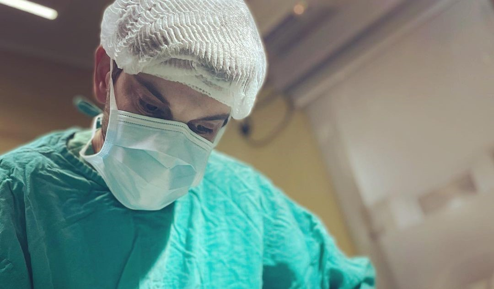

Bienvenidos
Mi nombre es Emanuel Montes de Oca, médico recibido de la UNLP. Me encuentro muy contento de darles la bienvenida a mi página profesional; espacio donde irán conociendo los tratamientos y cirugías que realizo, a través de una combinación de esquemas, dibujos e imágenes.
Para los que no me conocen, contarles que realicé en el Hospital Gutiérrez de La Plata mi primera especialidad en Cirugía General, posteriormente alcancé mi segunda especialidad en Cirugía Plástica, Estética y Reparadora en el Hospital Alemán. Como así también, posgrados en Medicina Estética en la UAI y UCA.
Espero disfruten el contenido y quedo a su disposición para consultas.
Testimonios
Notable profesional, simplemente, ¡excelente!
Spinnato, Antonela - Técnica en Prácticas Cardiológicas